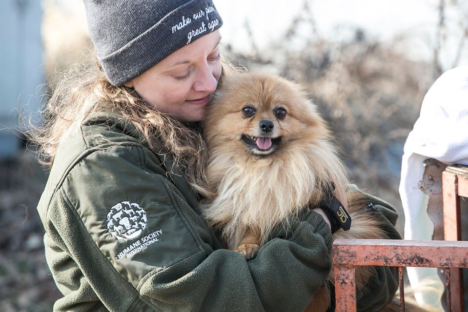
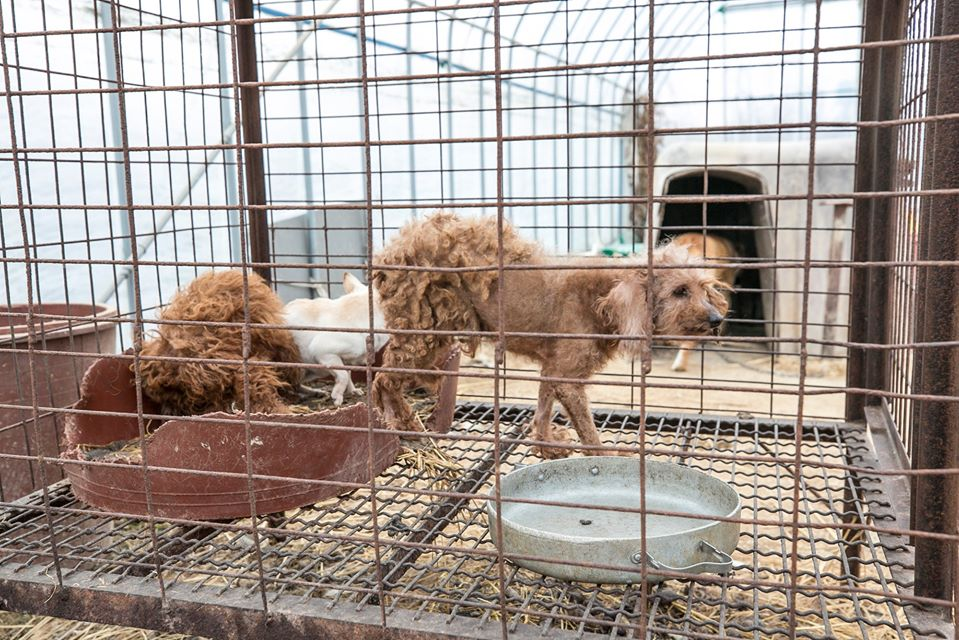

Rescatados y adoptados
Construimos entre todos una protectora de animales que vela y protege a nuestros amigos peludos en situación vulnerable, abandonados a su suerte son rescatados y atendidos en nuestras instalaciones a través de nuestros veterinarios de confianza.
Nos hemos constituido desde hace 5 años, con la misión de poder brindarle a todos una segunda oportunidad, en especial porque si no teníamos la iniciativa habría muchos animales sueltos sin ayuda de nadie. Queremos asegurarle a nuestros animales una vida plena, y que su destino sea más que el abandono y la desidia de las calles, y de aquellas personas negligentes que los arrastran a destinos inciertos, que los maltratan y los utilizan.
Queremos probarles que el ser humano es un fiel amigo del cual se pueden apoyar, más allá de aquellas personas malintencionadas de las cuales desafortunadamente, muchos se han tenido que cruzar.
Les mostraremos a continuación algunas historias de rescatados que en su mayoria acabaron siendo adoptados, lo que confirma nuestra labor como protectora de animales. Espero que disfrutéis tanto como nosotros.

Sabrina y Fabella
Todas las protectoras lo sabemos, es la típica historia de nunca acabar. Este es un claro ejemplo entre los miles que habrán en el país y en todo el mundo de lo que suele pasar a menudo. Esta es la historia de Sabrina y Falabella, que entre varios perros y gatos, fueron también abandonados a su suerte por aquellos que no tomaron en serio lo que es adoptar y cuidar a una mascota de por vida.
Es evidente, un animal no es un juguete, ni un objeto que puedes devolver cuando se nos plazca, y por sobre todo, son seres vivos sintientes, que sufren y sienten desamparo.Podemos confirmar, que afortunadamente, luego de que ellas tuvieran que sobrevivir en las calles pasando necesidades entre todos los animales, que por fin pudieron llegar a tener un nuevo hogar del lado de su nueva dueña que es responsable y cariñosa; Mariana Vince.
Lucky
Segundo, luce como una pantera de talle small. Como la mayoría de los animales en la calle, sufre la intemperie, las lluvias y el estrés de sobrevivir en el día a día. Por eso, los vecinos le construyeron una pequeña casa de manera manual, y los peatones de vez en cuando llenan los tarros con agua y comida.
Sin embargo, es evidente que nuestro pequeño Lucky se merece un mejor destino, se nos parte el corazón. Luego de varias visitas al veterinario, desparasitados y limpiado las heridas, podemos decir que su bienestar ha mejorado por mucho.
Aún está en adopción, si le interesa podrá encontrarlo entre nuestras fichas. Como todos los demás animales, cada uno lleva una historia, una historia de lucha. Nos alegraría que encuentre un hogar digno, tanto como los demás que están esperando ansiosos por un nuevo hogar cálido lleno de amor y cuidado.
Hope
Lo llamamos Hope, porque es esperanza por una vida mejor. Fue hallado herido tras una colisión en un accidente automovilístico. A diferencia de todas las historias anteriores, su situación fue algo distinta, porque la vida le arrebató el cariño de sus dueños de manera inesperada.
Y son cosas de la vida que suelen suceder…
Si a un ser humano le es arduo enfrentar el fallecimiento de un ser querido, ¿cómo sería para un animal?. Hope es un perro que sabemos que tiene mucho para dar a pesar de sus ojos tristes y su mirada gacha.
Más allá de las lesiones que no son físicas, que no se muestran al ojo humano, sabemos que afortunadamente pudo llegar a tener una segunda oportunidad, con la persona correcta regreso a ser feliz y obtener el bienestar que tanto merecía, que con el correr de los meses y la paciencia de un dueño paciente, volvió una vez, más a sonreir.
¡Todo el esfuerzo valió la pena!En conclusión
Como protectora nuestra labor es ardua. Hemos atravesado diferentes escenarios, como verán el más común es el abandono en las calles, pero también hay otras historias, accidentes, y hasta maltrato animal.
Aunque el abandono sea una forma de maltrato animal, también hay aquellos que utilizan a los animales para explotarlos como forma de lucrar con su vida y su cuerpo. Privandolos de su libertad, como las perras de raza que terminan agotadas luego de ser utilizadas para poder, como si fuese una mercadería producir más cachorros de raza.
Nuestro objetivo — el más primordial de todos— es otorgar a todos los animales, sea de donde vengan, y la historia que lleven a cuestas, un mejor destino, un hogar confortable. Espero que cada uno se tome en verdad en serio la responsabilidad de adoptar, confiamos en ustedes y seguro que confían en nosotros, ya que más allá de la apariencia, y los requisitos de cada animal hay un ser vivo que anhela una vida mejor, como cualquier animal doméstico.
Nosotros solo somos un hogar de tránsito, una conexión en la adopción, siempre habrá animales en las calles para rescatar, accidentes, fallecimientos de los dueños, la cuestión es saber ser consciente de eso.
Ser consciente de la calidad de vida que se le debe dar a un animal, porque ustedes obtendrán un amigo fiel que nunca los dejará solos ni siquiera abandonados, siempre serán una compañía confiable sin prejuicios, los amaran por quienes realmente son. Pero es obvio que es la razón por la cual adoramos a nuestros amigos peludos, a nuestros ronroneantes felinos, y los ladridos que escuchamos tras abrir la puerta de la casa. Es una responsabilidad de por vida, nos encargamos de que puedan elegir cual de todos les es más adaptable a su estilo de vida y personalidad.
Finalmente, no todos tendrán la misma suerte, debido a que no todos llegan a ser rescatados, no todos llegan a vivir lo suficiente para una segunda oportunidad. Esperamos que tengan una idea de todo lo que implica nuestro trabajo; sea desde ir a rescatarlos hasta curarlos y cuidarlos, darles ánimo para que no sientan soledad, así para que al final puedan llegar a acceder a un hogar definitivo.